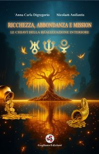
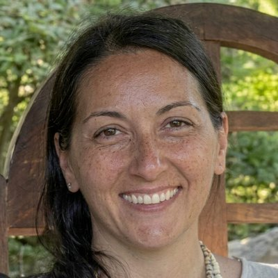
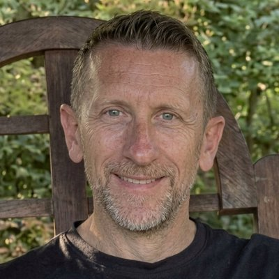

Chi siamo
Una scuola orientata al risveglio della coscienza e alla conquista della padronanza di sé. Il nostro percorso integra Antichi Insegnamenti, Alchimia e le 96 Leggi Universali per riconnetterci con la dimensione più profonda dell'essere: l'Anima.
Il nostro punto di partenza è il più antico degli insegnamenti: Γνῶθι Σεαυτόν — Conosci te stesso. Gli antichi lo incisero sul tempio di Delfi perché sapevano che senza conoscenza di sé non esiste vera libertà. Noi viviamo per lo più in uno stato di addormentamento: reagiamo meccanicamente, guidati da condizionamenti, paure e schemi inconsci che scambiamo per scelte libere.
La via del Conosci te stesso è una via di libertà. L'alchimia spirituale ci insegna a trasmutare ciascuno dei propri difetti nella sua qualità opposta — il piombo in oro — trasformando ciò che è meccanico in ciò che è consapevole.
La Scuola nasce per offrire gli strumenti di questo risveglio: non un sapere da accumulare, ma una pratica quotidiana di osservazione, presenza e lavoro su di sé che permetta di diventare padroni della propria carrozza anziché esserne trascinati. È un laboratorio nel senso più antico del termine — dal latino labor, fatica orientata e consapevole: una fatica dello spirito, in cui la volontà dell'uomo si unisce alla richiesta al cielo.
Viviamo in un'epoca in cui temiamo che l'intelligenza artificiale possa sfuggire al nostro controllo — eppure è esattamente ciò che è già accaduto, da millenni, con la nostra intelligenza organica: la macchina biologica ha preso il comando, e l'Anima non riesce più, da sola, a disinserire il pilota automatico. La nostra vita non può ridursi a un'esistenza senza scopo, dettata dalla sopravvivenza. Riallineare il proprio sguardo a quello dell'Anima è il primo atto di libertà — e ciò che all'inizio sembra solo un allenamento a contrasto della meccanicità, a un certo punto diviene un'attitudine naturale: quel seme ha attecchito ed è diventato pianta vivente in noi.
Il primo strumento è il discernimento: imparare a distinguere ciò che è autentico da ciò che è meccanico dentro di noi — questa reazione è mia, o è un automatismo della macchina? Questo pensiero nasce dall'interno o è indotto dall'esterno? Prima impariamo a discernere dentro, e poi sarà semplice discernere anche fuori. Il secondo strumento è il silenzio: uno dei più grandi alleati nella vita. Ascoltare il silenzio e osservare l'invisibile sono un'elevata forma di preghiera che può destarci dal sonno della coscienza — abbassare il rumore fuori e dentro di noi per fare chiarezza su chi siamo veramente.
Antichi Insegnamenti
Scienza Iniziatica, Quarta Via di Gurdjieff, Magia Ermetica, Antroposofia, Teosofia, Agni Yoga, Enneagramma, Kabbalà, Buddismo, Taoismo, Sciamanesimo. Tradizioni diverse, un'unica verità al centro: dall'OM induista al Logos giovanneo, il suono di creazione dà forma alla vita — e l'uomo, co-creatore, ha il compito di significare le cose e dare ordine al proprio mondo. Non è casualità: la scienza moderna sta confermando ciò che gli antichi già sapevano — che nel corpo umano è custodito un Logos creativo, un programma dell'anima più antico e profondo di qualsiasi condizionamento acquisito.
Dove e quanto dura
I seminari si svolgono in presenza a Bari e online, per permettere a chiunque di accedere agli insegnamenti — indipendentemente da dove ci si trova.
Il percorso si articola in 7 anni (3 di base + 4 avanzati), con 6 incontri per anno nei livelli base e 3 nei livelli avanzati. Ogni anno costruisce sul precedente, accompagnando lo studente in una trasformazione progressiva e radicata.
Video di presentazione
Uno sguardo sulla Scuola
conosci il nostro cammino
Consapevolezza ed Alchimia
Conoscere per trasformare, trasformare per essere: i due assi attorno ai quali ruota l'intero cammino.
Consapevolezza
- Conoscenza di sé — natura inferiore e superiore
- Conoscenza delle 96 Leggi Universali
- Antichi Insegnamenti: Scienza Iniziatica, Quarta Via, Kabbalà, Magia Ermetica, Agni Yoga, Buddismo, Taoismo, Sciamanesimo...
- Comprensione dei libri Sacri (in primis il Vangelo)
- Studio simbolico del Mito e degli Archetipi
Alchimia
- Tramutazione del piombo in oro: Ombra in Luce
- Allenamento pratico con esercizi di Alchimia interiore
- Applicazione delle Leggi Universali nella vita quotidiana
- Trasmutare la propria quotidianità
- Diventare artefici consapevoli della propria realtà
Il cammino della Scuola non è lineare ma a spirale: ogni giro ci riporta sugli stessi nodi da un livello più profondo. Ciò che era invisibile diventa osservabile; ciò che era osservabile diventa trasformabile.
Il metodo della ScuolaPresenza e Osservazione
Solo il 5% della nostra vita è conscio — il restante 95% è governato da programmi inconsci, come un pilota automatico che determina pensieri, emozioni e reazioni al nostro posto. Il primo passo è sviluppare il Doppio Alchemico — l'Osservatore interiore — una parte di noi capace di guardare senza giudicare ciò che accade dentro e fuori. Meditare non come pratica ma come atteggiamento mentale: autosservazione, attenzione divisa, introspezione senza filtri. Ogni volta che cediamo inconsapevolmente a un vizio, a una dipendenza, a una reazione automatica, stiamo cedendo la nostra sovranità — il potere personale che ci è stato conferito. Riprenderselo inizia con un gesto semplice: osservare. Perché il tempo non guarisce — la presenza sì.
Il Fuoco Alchemico
Le emozioni non elaborate diventano veleni che intossicano corpo, mente e relazioni. Il Fuoco Alchemico nasce dall'attrito tra il disagio interiore e l'osservazione consapevole: è il fuoco che accende la trasformazione. Non basta sapere — bisogna diventare ciò che si sa. Il lavoro è simile a una ginnastica posturale della mente: da un lato si allentano le vie neurali del pensiero distorto — quelle ipertrofiche, che ci fanno reagire da vittime — dall'altro si rinforzano le vie del pensiero corretto, fino a quando la nuova postura diventa naturale. Le nostre ferite non sono solo qualcosa da guarire: sono il motore stesso dell'evoluzione — fanno male, e quel dolore ci attiva al movimento. Ma non possiamo cambiare la nostra vita senza aver cambiato la nostra essenza, altrimenti tutto si rimetterà in coerenza e tornerà come prima. Tutto ciò che viene osservato, riconosciuto e nominato perde potere: il meccanismo non viene eliminato, ma visto. E quando vediamo, possiamo scegliere.
Riprendere le Redini
Gurdjieff descrive l'essere umano come una carrozza senza padrone: il corpo fisico è la carrozza trascinata senza controllo, le emozioni sono i cavalli impulsivi, la mente è il cocchiere distratto, e la coscienza — l'Anima — è il passeggero addormentato che dovrebbe indicare la direzione. Finché il passeggero dorme, la carrozza va alla deriva. Il lavoro su di sé consiste nel risvegliarlo: riconoscere i propri automatismi, le maschere, i condizionamenti, e gradualmente diventare padroni della propria vita — non più vittime e schiavi dell'esterno, ma artefici consapevoli del proprio cammino.
La Risalita
L'antica tradizione descrive il cammino dell'anima come un Albero della Vita con dieci frutti — dieci attributi divini che l'essere umano deve incarnare per tornare alla propria origine. Nella discesa, l'anima riceve i semi di ogni attributo; nella risalita, deve piantarli nella terra della propria esistenza e farli crescere. Per farlo dovrà attraversare sette iniziazioni — sette periodi di prova che abilitano a nuovi stati di coscienza — e orientarsi grazie al proprio Raggio Animico, la nota unica che connette ciascuno alla propria natura divina. Lungo la via, le sette ferite dell'anima — rifiuto, abbandono, tradimento, umiliazione, ingiustizia, abuso, negligenza — non sono ostacoli ma materia prima: trasmutarle significa incarnare i sette talenti spirituali corrispondenti e costruire, pezzo dopo pezzo, la propria Pietra Filosofale. Non si tratta solo di spogliarsi di ciò che non siamo, ma di riscoprire il Verbo — la parola creatrice — e usarlo consapevolmente, con una mente connessa al cuore.
Abracadabra — io creo come dico.
Il libro
Anna Carla Digregorio e Nicolaos Anifantis raccolgono in queste pagine il cuore degli insegnamenti della Scuola: un percorso pratico per riconoscere e sciogliere i blocchi interiori che separano dalla propria Abbondanza autentica.

Ricchezza, Abbondanza e Mission
Le chiavi della realizzazione interiore
Attraverso le Leggi universali della prosperità e dell'evoluzione spirituale, scoprirai strumenti concreti per dissolvere blocchi, liberarti da schemi limitanti e riappropriarti del tuo potere. Grazie alle chiavi archetipiche e alle antiche saggezze, imparerai a riconoscere l'Abbondanza non come un premio da conquistare, ma come uno stato naturale da abitare.
"Mira all'Abbondanza interiore, e la Ricchezza nella materia sarà una conseguenza. La Realizzazione non è una meta, ma uno stato dell'Essere." — Anna Carla Digregorio & Nicolaos Anifantis
22 Autosabotaggi
I meccanismi inconsci che inceppano la Realizzazione — dalla Mancanza di Gratitudine alla Difficoltà a Condividere. Riconoscerli è il primo atto alchemico: ogni limite, visto con consapevolezza, diventa uno strumento di conoscenza di sé e una porta verso la propria qualità opposta.
6 Leggi Universali
La Ricchezza Autentica non si conquista, si accoglie. Le Sei Leggi che sostengono l'Abbondanza sono forze attive con cui sintonizzarsi — non norme da seguire, ma frequenze da incarnare nella propria vita.
3 Archetipi Planetari
Urano, Nettuno e Plutone come Mappe Simboliche per navigare le prove quotidiane e accedere alle tre dimensioni dell'Essere.
Urano — Libertà e autenticità
Prove rapide e destabilizzanti, lampi che squarciano le illusioni. "La verità vi renderà liberi."
Nettuno — Connessione spirituale
Prove sottili, nebbie che dissolvono i confini dell'io. "Cerca prima il regno di Dio e tutte queste cose vi saranno date in aggiunta."
Plutone — Trasformazione e guarigione
Crisi ardenti, fuochi che bruciano ciò che non è autentico. "Chi vorrà salvare la propria vita la perderà, ma chi la perderà per causa mia la troverà."
Presentazioni & eventi
6 eventi tra conferenze, festival e presentazioni
13
Nov 2025
Evento letterario — IKOS Formazione
Via Giovanni Amendola 162/1, Bari
10
Ott 2025
Conferenza gratuita — Libreria Roma
P.zza Aldo Moro 13, Bari
27
Set 2025
Macrolibrarsi Fest — Presentazione libro
Cesena · Fiera del libro consapevole
5
Set 2025
Presentazione Scuola — Il Mondo che Voglio
Palese (Bari)
3
Set 2025
Presentazione Scuola — Libreria Roma
P.zza Aldo Moro 13, Bari
19
Lug 2025
Festival Harmoniae Mundi — "Dove dimora la Ricchezza?"
Masseria La Gatta Matta, Noci (BA)
Percorso Individuale di Alchimia Trasmutativa
Un viaggio personalizzato, costruito sull'obiettivo evolutivo specifico di chi lo intraprende. Nasce da un momento di crisi, da un passaggio delicato, o dal desiderio di accelerare una trasformazione già in atto.
✶ La Scuola
- Percorso formativo strutturato e condiviso
- Manifestare la propria Anima nella vita quotidiana
- Antichi Insegnamenti e 96 Leggi dell'Universo
- Strumenti universali da integrare nella vita quotidiana
- Cammino condiviso con altri partecipanti
Percorso Individuale
- Viaggio personalizzato sul tuo obiettivo evolutivo
- Nasce da un momento di crisi o da un passaggio delicato
- Lavoro sull'Inconscio attraverso incontri mirati
- Illuminazione delle zone d'ombra
- Trasformazione intima e concreta
La Scuola e il Percorso Individuale non si escludono: possono essere vissuti insieme, arricchendosi a vicenda. La prima offre Conoscenza e Pratica costante; il secondo, ascolto profondo e sostegno mirato. Insieme, rappresentano un potente strumento di trasformazione e risveglio.
I conduttori
Guide di percorsi individuali e di gruppo, dedicati alla consapevolezza, alla crescita interiore e all'Alchimia trasformativa. Trasmettono con amore, passione e chiarezza ciò che hanno ricevuto, integrato e sperimentato.

Anna Carla Digregorio
Conduttrice & autrice
Laureata in Farmacia, per oltre undici anni ha gestito una grande Parafarmacia nel cuore di Bari, trasformandola in un centro dedicato alla Salute Integrata.

Nicolaos Anifantis
Conduttore & autore
Solido background nella produzione farmaceutica industriale, unito a un lungo percorso di ricerca che intreccia scienza, tradizione e spiritualità.
Per undici anni hanno lavorato come imprenditori nel settore farmaceutico, portando nella loro professione un principio che già allora orientava la loro visione: la cura va direzionata all'essere umano nel suo insieme, non alla malattia isolata — perché il sintomo è sempre la voce di uno squilibrio più profondo, un disallineamento tra Anima, mente e corpo.
Quel percorso professionale si è intrecciato con anni di ricerca spirituale condivisa: scuole ermetiche, insegnamenti cristici, Enneagramma, Antroposofia, Teosofia, Cabala, pratiche sciamaniche — tradizioni diverse attraversate con rigore e con cuore, fino a trovare il filo che le unisce. Oggi trasmettono ciò che hanno ricevuto, integrato e vissuto sulla propria pelle, collegando le antiche filosofie alle scienze di confine nel processo di riunificazione tra materia e Spirito.
Offrono consulenze individuali di crescita ed evoluzione interiore: alchimia trasmutativa, kinesiologia evolutiva, disidentificazione dall'ego, immaginoterapia del profondo, riconnessione con il Sé ancestrale attraverso la pratica sciamanica e la mindfulness. Ogni incontro è pensato come uno spazio sacro in cui il cambiamento diventa possibile.
Dal 1994 portano avanti anche un progetto animico di coppia: una testimonianza concreta che l'Alchimia non è solo dottrina, ma una realtà che si costruisce giorno per giorno, nell'amore, nell'unione e nella comunione. Insegnano ciò che vivono.
Eleonora Digregorio
Collaboratrice · lezioni e seminari esperienziali
Affianca i conduttori nelle lezioni e nei seminari esperienziali, portando la propria sensibilità e il proprio percorso interiore al servizio del gruppo.
Il calendario delle lezioni
Sette anni di approfondimento progressivo, strutturati in cicli annuali. Ogni lezione si costruisce sulla precedente: non si accumula sapere, ci si trasforma in ciò che si studia.
Ciclo Base · Anni 1–3 · 6 incontri/anno
I primi tre anni costituiscono il fondamento del percorso. Il primo anno insegna a riconoscere le maschere, i meccanismi inconsci e le reazioni automatiche — il cerchio più esterno dell'Io. Il secondo anno scende più in profondità nei programmi automatici dell'inconscio attraverso l'Enneagramma — tutto ciò che, se non disattivato, rischia di identificarci con un programma anziché con ciò che siamo. Il terzo anno introduce l'Albero della Vita e le Geometrie Sacre — il linguaggio con cui la mente universale ha creato le proporzioni dell'intero Cosmo — per studiare i passi della risalita dell'Anima, le sette iniziazioni che abilitano a nuovi stati di coscienza, fino alla scoperta del proprio Raggio Animico: la nota unica dell'anima che orienta il cammino e rivela la propria vocazione nel mondo. Al termine del ciclo base, l'allievo ha acquisito gli strumenti fondamentali: discernimento, presenza e la capacità di riprendere la propria sovranità interiore.
Anni Avanzati · Anni 4–7 · 3 incontri/anno
Gli anni avanzati approfondiscono la Magia Ermetica e i Principi del Kybalion, le Tavole di Smeraldo, le Ferite Astrali — prove predeterminate dall'anima per attivare il movimento evolutivo, trasformando ogni ferita in un talento dello spirito — e lo Sciamanesimo iniziatico: un cammino progressivo verso la cristificazione della carne e la realizzazione del Sé. Il settimo anno segna il passaggio dalla teoria all'opera: non si studia più il fuoco, si entra nel fuoco. La Magia Ermetica diventa operativa, l'Ermetismo converge con lo Sciamanesimo nel Tempio Interiore — e il praticante non è più un allievo, ma un adepto in trasformazione che impara a portare il rito nel mondo.
Pensieri & ispirazioni
Parole che hanno segnato il cammino — dei maestri di ogni tempo, e di chi oggi cammina con la Scuola.
Contatti
Ogni cammino inizia con un passo. Se senti che qualcosa in queste pagine risuona con te, scrivici — saremo felici di risponderti.
Ogni percorso inizia con una domanda. Scrivici liberamente — risponderemo con cura e nel più breve tempo possibile.